Guide · version 0.3.1
How Outpost Luna works
Every picture below is a screenshot of the real app. The numbered dots match the notes under each picture.
Step 1
Install and first run
Download the Mac app (246 MB), drag it to Applications and open it. The first time, it downloads its models once. After that it runs with no internet.
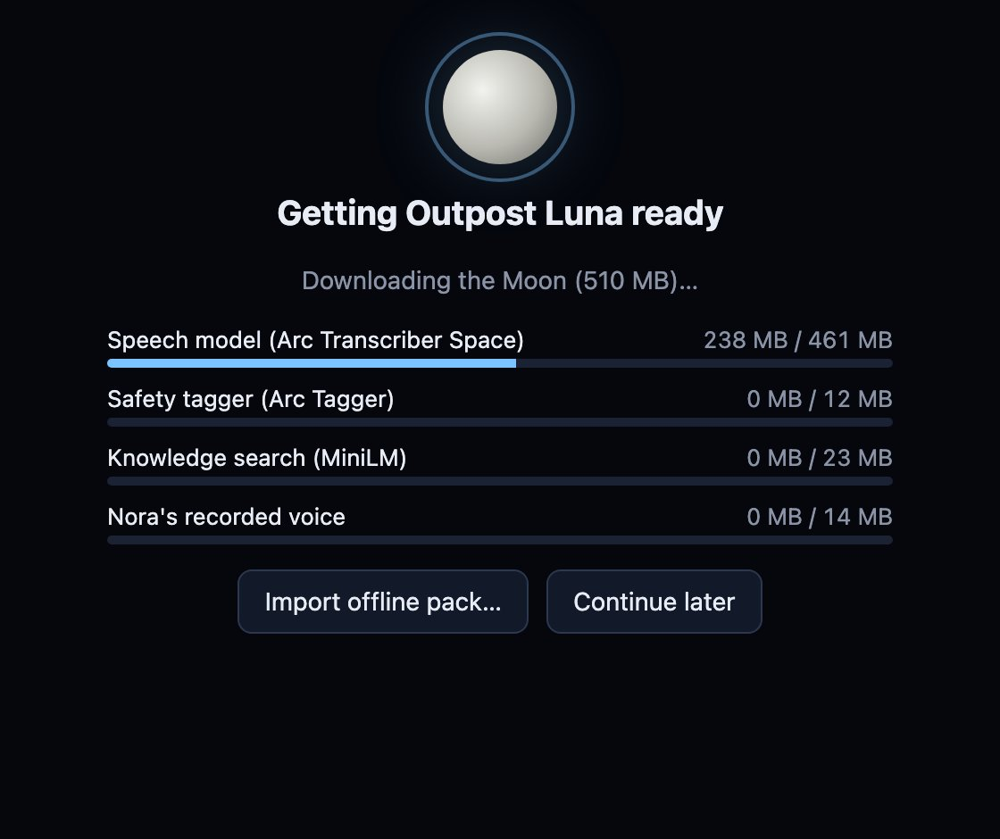
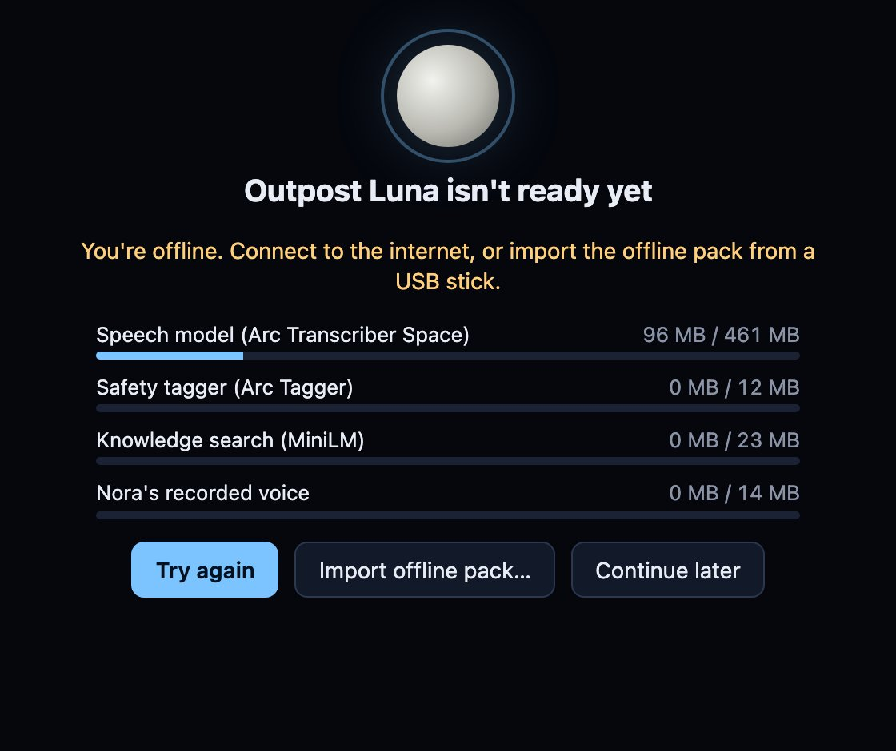
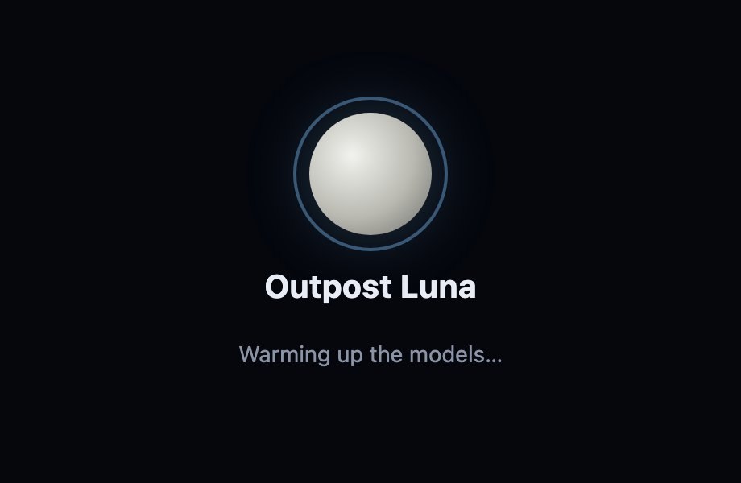
- One download, about 510 MB. The speech model, the safety tagger, the knowledge search and the recorded voice.
- Progress for each part. Every file is checked before it is installed.
- Continue later. A stopped download picks up where it left off at the next launch.
- Import offline pack. No network? Load the 885 MB offline pack from a USB stick instead.
- Warming up the models. A few seconds on each launch, then the app opens. The Artemis II crew audio and NASA videos (about 375 MB) download in the background.
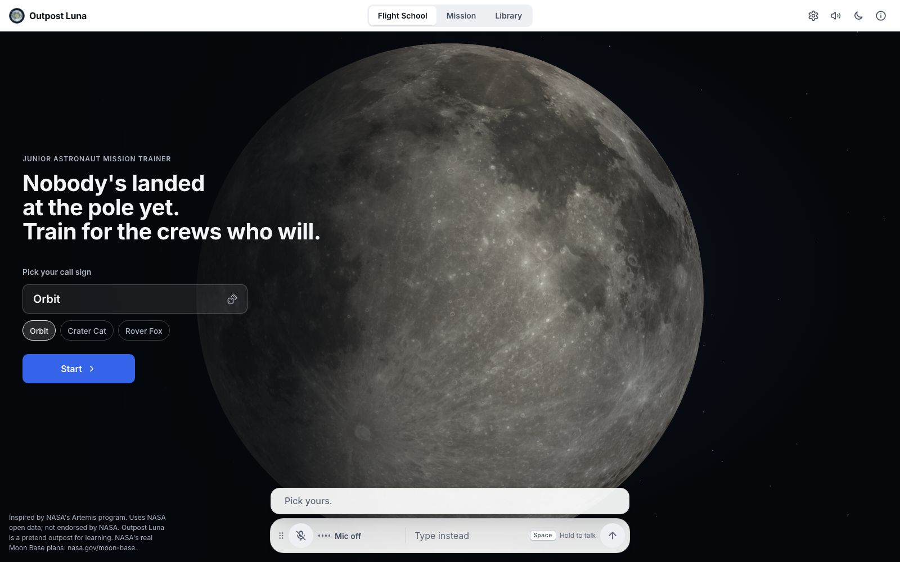
- The story. Nobody has landed at the south pole yet. You train for the crews who will.
- Pick a call sign. Type one or tap a suggestion. It stays on this computer.
- Start. Or say "start".
- The voice bar. Always at the bottom. Talk, or type instead.
Step 2
Flight School
Short spoken lessons with CAPCOM. Each one ends with a patch. There are 9: 6 core lessons, 2 explorer lessons and the check ride.
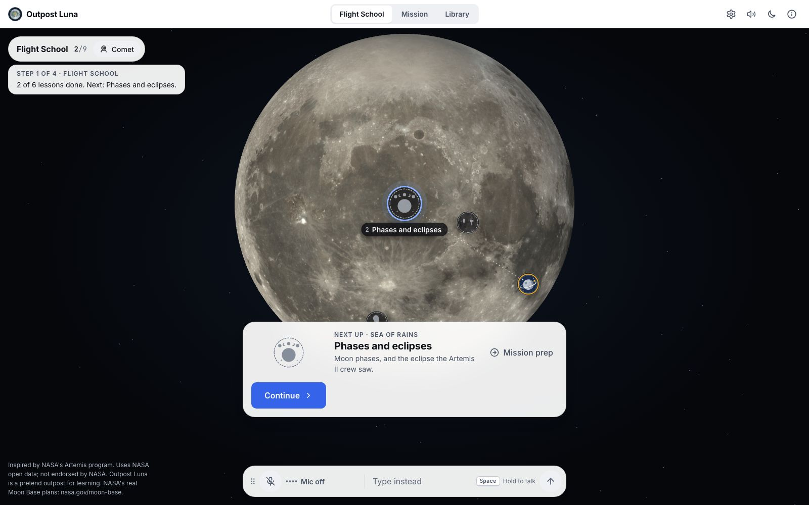
- Three places. Flight School, Mission and Library. Switch any time.
- Settings, sound, light or dark, and About.
- Your progress. Patches earned out of 9, and your call sign.
- Lesson patches on the Moon. Each sits where its story happens. Tap one, or say its name.
- Next up. Continue goes straight to the next lesson.
- Mission prep. Optional hands-on activities for a table at home.
- The mic. Hold Space to talk, or switch on hands-free in Settings. "Type instead" always works.
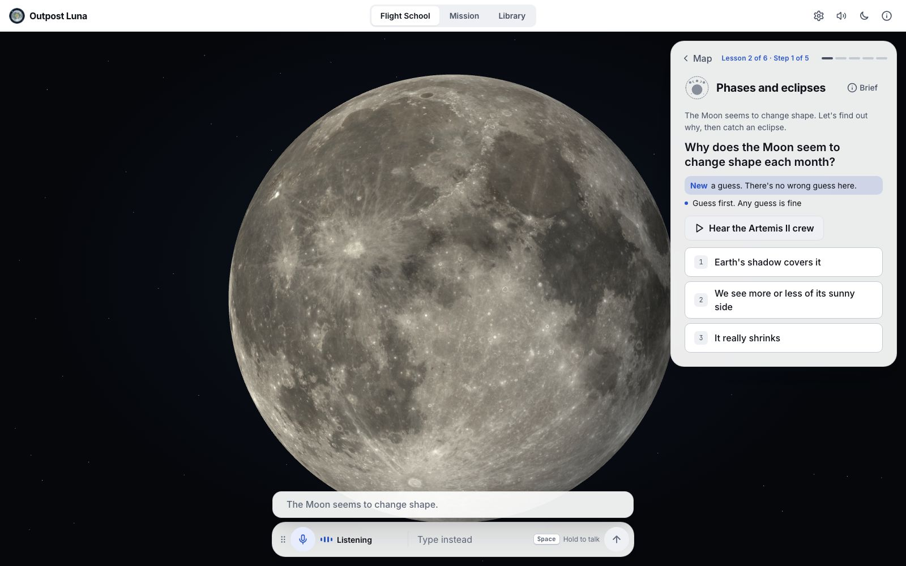
- Where you are. Lesson and step. Map goes back; Brief recaps the lesson.
- CAPCOM asks. One question at a time.
- Guess first. There is no wrong guess. The guess comes before the answer on purpose.
- Real Artemis II crew audio. Hear the crew talk about the same thing.
- Answer any way. Say it, tap it, or press 1, 2 or 3.
- Captions. Every spoken line is also shown as text.
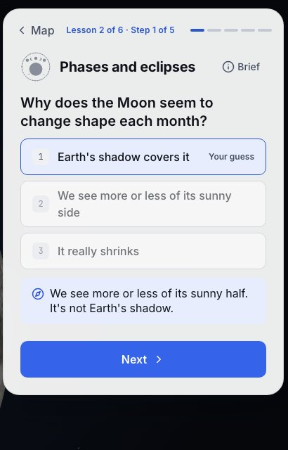
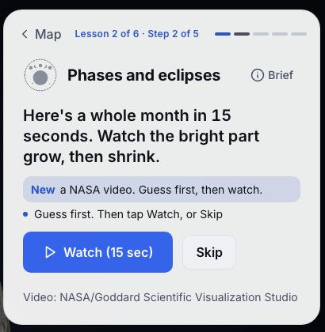
- Your guess stays marked.
- The explanation. One or two plain sentences.
- A short NASA video. Guess first, then watch, or skip.
- The source. Every video and fact names where it came from.
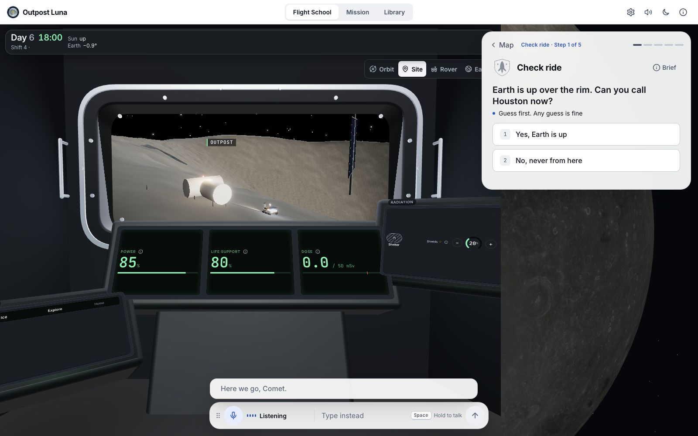
- A first solo shift in the real cabin.
- Still a lesson. CAPCOM asks, you decide. Pass it to earn the Mission Commander patch and unlock missions.
Step 3
Mission: run the outpost for 10 days
Pick a real south-pole site, then keep the crew powered, breathing and safe from solar storms.
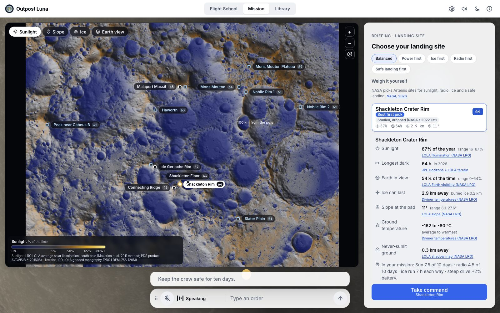
- NASA map layers. Sunlight, slope, ice and Earth view, from the LRO orbiter's LOLA and Diviner maps.
- Real candidate sites. Each pin has a score. Tap one, or say "pick Malapert".
- What the colours mean, and the NASA data product behind them.
- What matters most to you. Balanced, power, ice, radio or a safe landing.
- The site's score.
- The real numbers. Sunlight, longest dark, Earth in view, ice, slope, temperature. Each links to its NASA source.
- Take command. Starts the mission at this site.
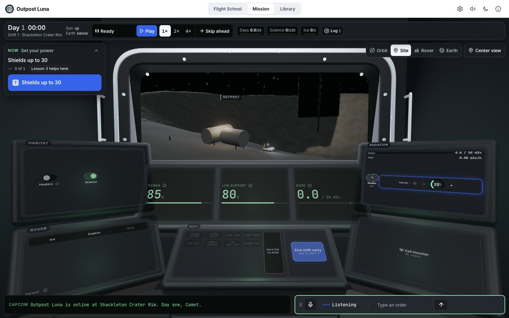
- Mission clock. Day, time, shift and site, plus whether the Sun and Earth are up.
- Time. Play or pause (K), 1×, 2× or 4× (W), and Skip ahead to the next event (E).
- Goals and log. Days survived, science and ice brought home.
- Now. The one task that matters next. Press its button, press T, or say it.
- Window views. Orbit, Site, Rover and Earth. Center view (R) looks straight ahead again.
- Gauges. Power, life support and radiation dose. The (i) on each says why it is moving.
- Habitat. Heaters and the science lab.
- Radiation. The storm shelter and the shield power knob.
- Shift. Caution and warning lights, the master alarm, and End shift.
- Radio. Call Houston, when Earth is in view.
- CAPCOM and your orders. Every line as text, and a box to type an order, like "shields to 40".
The first time in the cabin, a short tour points at each part. Skip it any time.
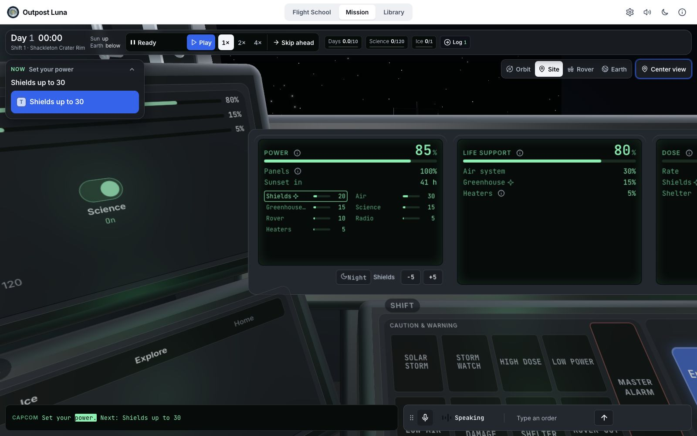
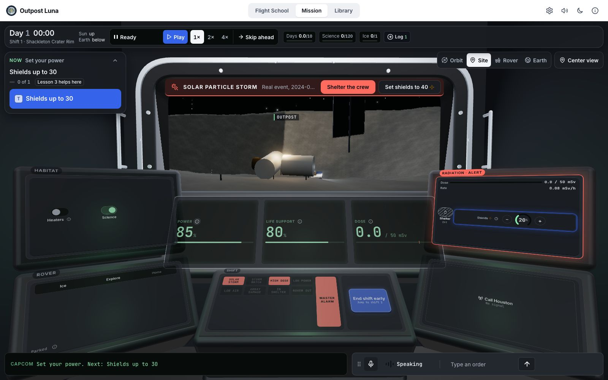
- Power up close. Battery, panels, and hours until sunset. The (i) explains each number with NASA data.
- The power budget. Where the outpost's power goes.
- Quick moves. Night mode, and shields up or down by 5.
- The storm banner. It names the real NASA DONKI event this storm replays. Shelter the crew, or raise the shields.
- Radiation alert. The dose rate jumps; the panel turns red.
- Caution and warning. The storm light and the master alarm.
After 10 days, or if the crew runs out of power or air, the debrief tells the story of the mission, the real data behind each event, and one thing to try next time.
Step 4
The Moon Library
The whole Moon to explore: landing sites, craters and the hardware people left there. Ask out loud and the Moon turns to show you.
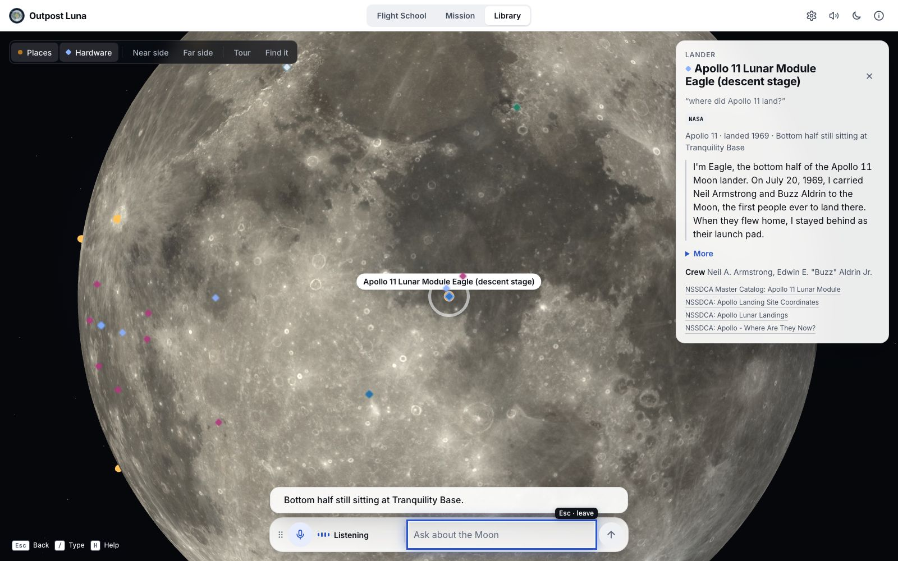
- Places and Hardware. Show or hide each kind of pin.
- Near side and Far side. Turn the Moon to either face.
- Tour and Find it. A guided tour, or a game of finding places.
- The Moon flies to the answer.
- A card for what you asked. Its story, in its own words.
- Sources. Each card links to NASA's NSSDCA records.
- Ask anything about the Moon. Say it or type it.
Step 5
Settings
Open with the gear, or press S. Everything is saved on this computer only.
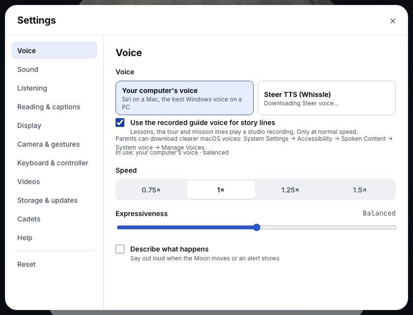
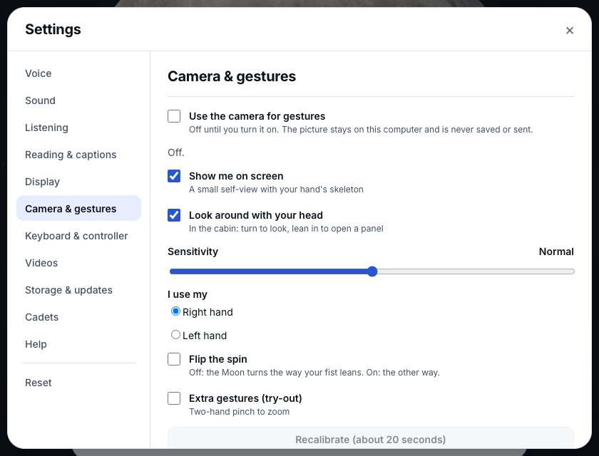
- Every section. Voice, sound, listening, captions, display, camera, keyboard and controller, videos, storage and reset.
- Your computer's voice. The default: Siri on a Mac, the best Windows voice on a PC.
- Steer TTS, Whissle's expressive voice. Tap "Get the Steer voice (13 MB)" once; it downloads in the background.
- Speed and expressiveness.
- The camera is off until you turn it on. Pictures stay on this computer; they are never saved or sent.
- A small self-view and head look. In the cabin, turn your head to look around.
- Sensitivity and your hand. A thumbs up says yes, an open hand stops, a fist spins the Moon.
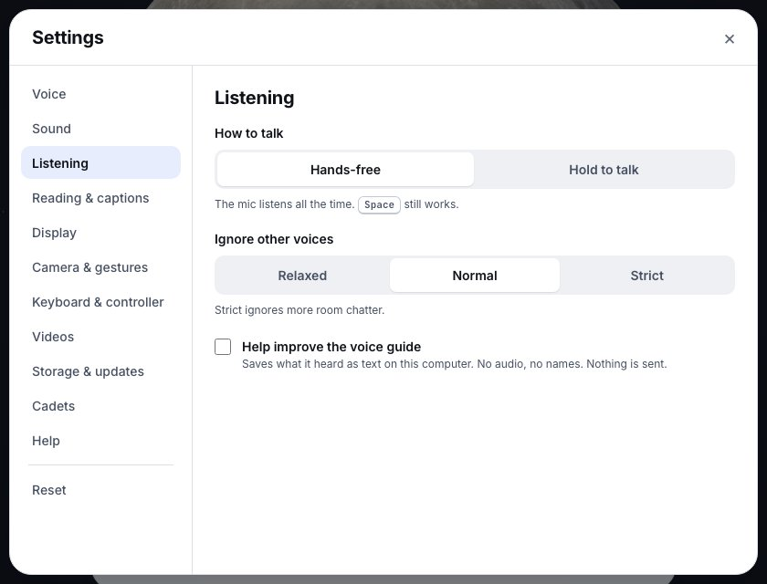
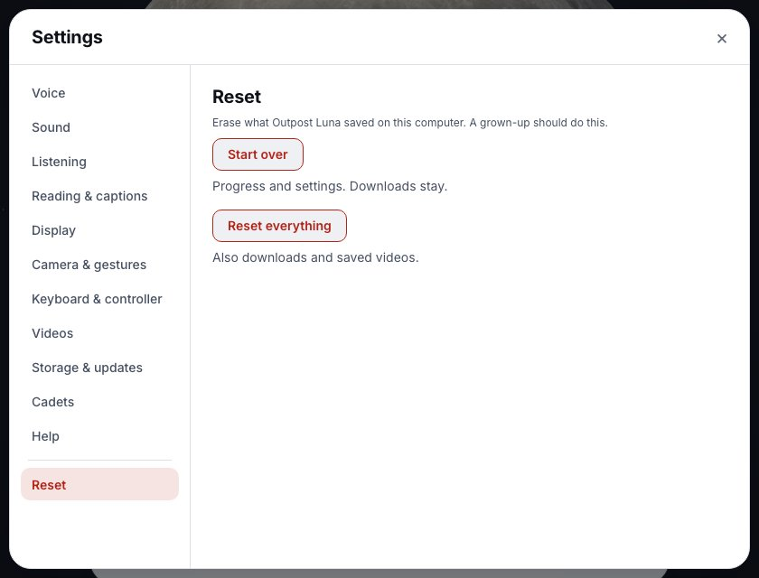
- How to talk. Hands-free (the mic listens all the time) or hold Space to talk.
- Ignore other voices. Strict ignores more room chatter.
- Start over. Erases progress and settings; downloads stay.
- Reset everything. Also removes the downloaded models and videos. The next launch downloads them again.